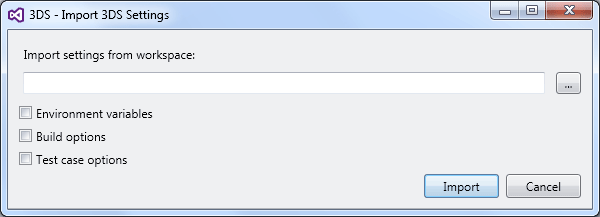

Importing Settings from Another Workspace |
|
This task shows you how to import the settings of a workspace into the current workspace. |
Before you begin:
|
On the Tools menu, click 3DS Import settings.
The 3DS - Import 3DS Settings dialog box opens.

In Import settings from another workspace, either type or click ... to select the path name of the root folder of the workspace from which you want to import the settings.
Check Environment variables to import this workspace's environment variables.
These environment variables are set using the 3DS - Create or overwrite build time environment variables dialog box. See Accessing and Customizing Environment.
Check Build options to import this workspace's build options.
These build options are set using the 3DS - Build Options dialog box of the Build with mkmk command. See Compiling.
Check Test case options to import this workspace's test case options.
These test case options are set using the ODT Replay Selection dialog box of the Run Tests command. See Running Tests.
Click Import to import these settings to the current workspace.
| Version: 1 [Jul 2017] | Document created |